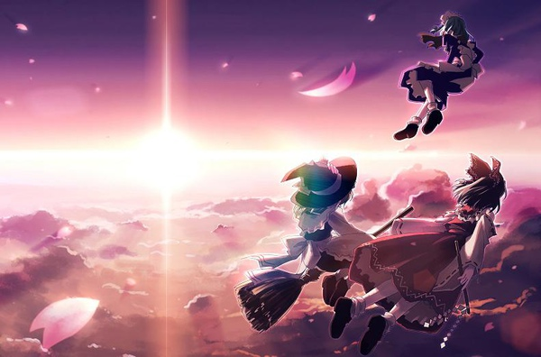

2015年7月30日更新
我做了一系列東方解說影片，歡迎對東方有興趣的朋友觀看 ▼ ▼ ▼
【猴子也懂的東方Project】
- - - - - - - - - - - - -
其實以前好像有看過類似的其他篇，不過大多零零散散寫的不全，有的只介紹遊戲，有的只介紹二次設定，有的只介紹人物和音樂…我不敢自稱東方迷，對東方系列也沒有多了解，只是就自己所收集到的資訊做個整理，讓感興趣的人能查到相關知識。聲明，站長對射擊遊戲苦手，根本沒有玩通過遊戲，單只是本著對角色的愛和想看懂同人的強烈欲望(?)研究東方。
東方Project概述
東方，正確來說叫「東方Project」，因為角色多半是女性，常會被誤以為是什麼萌遊戲，其實它是由日本同人社團「上海アリス幻樂団（上海愛莉絲幻樂團）」製作的一系列遊戲，其中以彈幕射擊類佔大多數。

雖說社團名含「上海」二字，跟中國一點關係也沒有，並且，雖然叫「樂團」，除了『東方萃夢想』、『東方緋想天』及『東方花映塚』的CG是跟人合作外，其他各代遊戲皆為作者ZUN一人包辦音樂、程式、美術、劇本創作，也就是所謂「一個人的樂團」。通常所說的「神主」就是指ZUN。實際上他的確很符合這個名字，會作曲的人有很多，會畫畫的人也有很多，但同時集合這麼多才藝於一身的，絕對是鳳毛麟角。
關於ZUN的身份，僅知道他本名太田順也，是名程式設計師。由於Taito遊戲公司內也有一名太田順也，再根據神主網誌透露的部份線索，一般認為他就是ZUN。
東方Project以精心排列設計的幾何形彈幕著稱，世界觀、人設和遊戲性都受到很高評價，除此之外，因為BGM（背景音樂）非常出色，不少玩家是從音樂開始對東方感興趣的。在ニコニコ動画常見的「東方Vocal曲」是由同人對BGM進行再編曲和作詞後的二次創作，原作東方並沒有正式主題曲。
著名的同人電波歌「魔理沙は大変なものを盗んでいきました（魔理沙偷走不得了的東西）」
也許是東方Vocal曲最有名的一隻？
起碼是最有名的マリアリ百合MAD w
MAD背景：人類魔法使霧雨魔理沙和魔女愛麗絲，兩人來往親密卻吵架不斷
愛惡作劇的魔理沙老是到圖書館偷書，但其實，真正被竊取的，搞不好是愛麗絲的芳心 (誤)
患部で止まってすぐ溶ける～狂気の優曇華院
鈴仙（月兔）所發射的子彈形狀類似「座藥」，在MAD裡被惡搞一番。（注意八意永琳的教學）
世界觀方面，東方是以人類和妖怪共同生活、充滿和風的「幻想鄉」為舞台，人物有各式各樣的種族，包括人類、吸血鬼、妖怪、月兔、河童等等。故事方面主要是原創，有些參照了古代神話的設定，例如『東方永夜抄』就明顯有「竹取物語」的影子。
那麼，神主到底做了哪些遊戲？
* 一作目 「東方靈異伝 ～ Highly Responsive to Prayers」
* 二作目 「東方封魔録 ～ the Story of Eastern Wonderland」
* 三作目 「東方夢時空 ～ Phantasmagoria of Dim.Dream」
* 四作目 「東方幻想郷 ～ Lotus Land Story」
* 五作目 「東方怪綺談 ～ Mystic Square」
* 六作目 「東方紅魔郷 ～ the Embodiment of Scarlet Devil. 」
* 七作目 「東方妖々夢 ～ Perfect Cherry Blossom.」
* 七.五作目 「東方萃夢想 ～ Immaterial and Missing Power.」
* 八作目 「東方永夜抄 ～ Imperishable Night.」
* 九作目 「東方花映塚 ～ Phantasmagoria of Flower View.」
* 九.五作目 「東方文花帖 ～ Shoot the Bullet.」
* 十作目 「東方風神録 ～ Mountain of Faith.」
* 十一作目「東方地霊殿 ～ Subterranean Animism.」
不得不提的是，東方Project系列的遊戲出了名的「難」。
那彈幕的密度有多恐怖？請參考以下試玩影片（笑）順便欣賞東方精美的BGM～
東方妖々夢 Phantasmモード ＠ikis
東方永夜抄 Extraモード ＠ikis
系統方面，有興趣者可以再去找資料深入研究。本推廣教程的目的是讓人能夠輕鬆愉快地欣賞二次創作，直接談故事部份。
東方Project的世界
幻想鄉從前並未與外隔離，被稱為「東の国にある人里離れた辺境の地」，內住有妖怪，不小心闖入的人類會被妖怪抓起來吃掉，所以這個地方被人們所懼怕。不過也有些人類為了退治妖怪而居住於幻想鄉。後來人類因文明發展而數量劇增，妖怪的賢者‧八雲紫擔憂會導致幻想鄉的平衡崩壞，建立起「虛幻與現實的境界」，招引外界的妖怪進來維持勢力平衡。到了明治時代，近代文明將非科學事物稱為「迷信」而加以排斥，幻想鄉內的妖怪便和人類聯手建立起強大的結界，從此在那裡安靜地生活，逐漸被人們遺忘。
現在的幻想鄉周圍存在兩種結界，一種是八雲紫的「虛幻與現實的境界」，該結界可令外界的妖怪找到幻想鄉的所在之處，從而吸引他們前來，此外，不只生物，其他正在外界消失的事物也會遷移到幻想鄉內。另一種是數百年前由博麗神社的巫女所建立的「博麗大結界」，用以隔開「常識」和「非常識」…呃，簡單來說，是為了遮斷裡外的聯係而建立。
托人類和八雲紫所訂立之協議的福，妖怪們不再經常捕食人類，常有妖怪跑到人類的村落中玩，人類也會邀請妖怪來家中坐客，兩種族在幻想鄉內和平共存。
但是，有時候會發生平衡被打破的異變現象，東方Project作品都是以這些「異變」作主題的。發現異變後，基本都是由博麗神社的巫女博麗靈夢出發調查，找出犯人加以懲罰。有時也會和她的魔法使朋友‧霧雨魔理沙一起行動，東方就是這樣的故事展開。
下一篇將介紹東方的人物（含二次創作設定）。
[ 推薦閱讀 ]
東方相關的文章目錄 - 2008